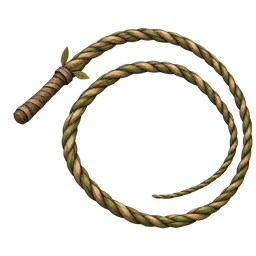
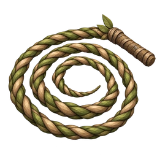
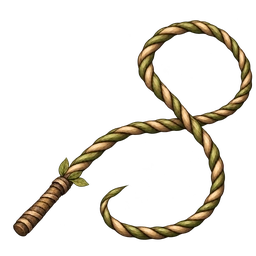

STILLNESS · 드루이드의 채찍
섬네일 추가 시안
기존 1안에 더해, 말아 놓은 형태가 다른 두 안을 만들었습니다.
1 · 넓은 원형
기존 시안 · 큰 빈 공간과 가벼운 윤곽

64px / 96px
2 · 촘촘한 코일
차곡차곡 말린 형태 · 오른쪽 위 손잡이

64px / 96px · 원본 보기
3 · 느슨한 8자 · 수정
한 줄로 이어지는 교차 · 안쪽으로 끝나는 꼬리

64px / 96px · 원본 보기
채찍 소리 · A안 확정
선택하신 A안을 작업본의 몸·옷 타격음으로 반영했습니다.
“Whip” — Mike Koenig, SoundBible · CC BY 3.0. 일부 발췌·페이드·음량 조정·MP3 변환. 위 재생은 비교용으로 같은 소리를 세 번 이어 붙인 것입니다.